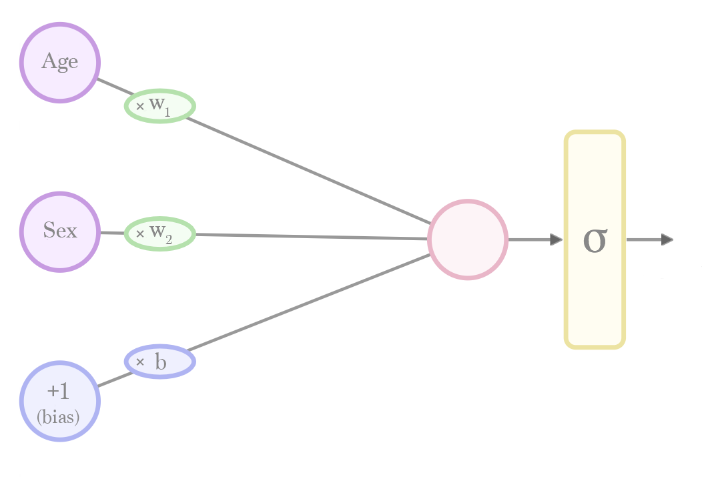
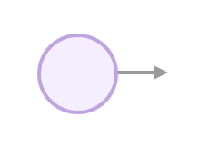
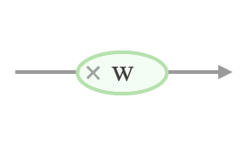
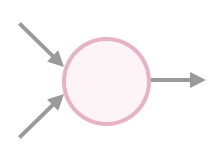
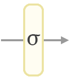
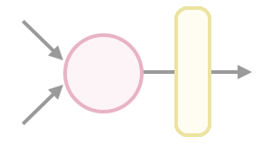
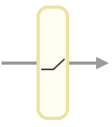

If you had been aboard the Titanic, would you have survived the sinking event? Let’s build a model to predict one’s
odds of survival.
This will be a neural network model building on what we discussed in the previous post, but will have
a higher prediction accuracy because it utilizes hidden layers and activation functions.
The dataset we’ll use this time will be the Titanic passenger list from
Kaggle. It lists the names and other information of the passengers and shows whether each passenger survived the
sinking event or not.
The raw dataset looks like this:
PassengerId
Survived
Pclass
Name
Sex
Age
SibSp
Parch
Ticket
Fare
Cabin
Embarked
1
0
3
Braund, Mr. Owen Harris
male
22.0
1
0
A/5 21171
7.2500
NaN
S
2
1
1
Cumings, Mrs. John Bradley (Florence Briggs Th…
female
38.0
1
0
PC 17599
71.2833
C85
C
3
1
3
Heikkinen, Miss. Laina
female
26.0
0
0
STON/O2. 3101282
7.9250
NaN
S
We won’t bother with most of the columns for now. We’ll just use the sex and age columns as our features, and
survival as our label that we’ll try to predict.
Age
Sex
Survived?
22
0
0
38
1
1
26
1
1
… 891 rows total
We’ll attempt to build a network that predicts whether a passenger survived or not.
Neural networks need their inputs to be numeric. So we had to change the sex column – male is now 0, female is 1.
You’ll notice the dataset already uses something similar for the survival column – survived is 1, did not survive is
0.
The simplest neural network we can use to train to make this prediction looks like this:
 Calculating a prediction is done by plugging in a
value for "age" and "sex". The calculation then flows from the left to the right. Before we can use this net for
prediction, however, we'll have to run a "training" process that will give us the values for the weights (w) and bias (b). Note: we have slightly
adjusted the way we represent the networks from the previous post. The bias node specifically is more commonly
represented like this
Let’s recap the elements that make up this network and how they work:

An input neuron is where we plug in an input value (e.g. the age of a person). It’s where the calculation
starts. The outgoing connection and the rest of the graph tell us what other calculations we need to do to
calculate a prediction.

If a connection has a weight, then the value is multiplied by that weight as it passes through it.
connection_output = weight * connection_input

If a neuron has inputs, it sums their value and sends that sum along its outgoing connection(s).
node_output = input_1 + input_2
Sigmoid

To turn the network’s calculation into a probability value between 0 and 1, we have to pass the value from
the output layer through a “sigmoid” formula. Sigmoid squashes the output value of a neuron to between 0 and 1
according to a specific curve.
`f(x)=1/(1+e^-x)`
Where e is the mathematical constant approximately equal to 2.71828
Interact a little with sigmoid to see how it transforms various values
-1.63
f(-1.63) = `1/(1+e^-(x))` = 0.16383036122
To bring it all together, calculating a prediction with this shallow network looks like this:
def sigmoid(x):
return 1/(1 + math.exp(-x))
def calculate_prediction(age, sex, weight_1, weight_2, bias):
# Multiply the inputs by their weights, sum the results up
layer_2_node = age * weight_1 + sex * weight_2 + 1 * bias
prediction = sigmoid(layer_2_node)
return prediction
Now that we know the structure of our network, we can train it using [gradient descent] running on the first 600
rows of the 891-row dataset. I will not be addressing the training process in this post because that’s a separate
concern at the moment. For now, I just want you to be comfortable with how a trained network calculates a
prediction. Once you get this intuition down, we’ll proceed to training in a future post.
The training process gives us the following values (with an accuracy of 73.20%):
weight_1 = -0.016852 # Associated with "Age"
weight_2 = 0.704039 # Associated with "Sex" (where male is 0, female is 1)
bias = -0.116309
Intuitively, the weights indicate how much their associated property contribute to the prediction – odds of
survival improve the younger a person is (since a larger age multiplied by the negative weight value gives a
bigger negative number). They improve more if the person is female.
Prediction Calculation
The trained network now looks like this: (hover or click on values in the table to see their individual
predictions)
Age
Sex
Survived
22
0
0
38
1
1
26
1
1
35
1
1
35
0
0
14
1
0
25
0
0
54
0
0
An accuracy of 73.20% isn’t very impressive. This is a case that can benefit from adding a hidden layer. Hidden
layers give the model more capacity to represent more sophisticated prediction functions that may do a better job
(Deep Learning ch.5 page 113).

It’s often useful to apply certain math functions to the weighted outputs. These are called “activation
functions” because historically they translated the output of the neuron into either 1 (On/active) or 0
(Off).
def activation_function(x):
# Do something to the value
...
weighted_sum = weight * (input_1 + input_2)
output = activation_function(weighted_sum)
Activation functions are vital for hidden layers. Without them, deep networks would be no better than a
shallow linear network. Read the “Commonly used activation functions” section from Neural Networks Part 1: Setting up the Architecture
for a look at various activation functions.
ReLU

A leading choice for activation function is called ReLU. It returns 0 if its input is negative, returns the
number itself otherwise. Very simple!
f(x) = max(0, x)
# Naive scalar relu implementation. In the real world, most calculations are done on vectors
def relu(x):
if x < 0:
return 0
else:
return x
output = relu(value)
ReLU Visualization
0
0
Interact a little with relu to see how it transforms various values
0
f(0)
= max( 0, 0.00) = 0
Closing
This post has been parked for more than a year. I had attempted to visualize a deeper network after this point,
but that never materialized. I hope you enjoyed it. Let me know on @JayAlammar
on Twitter if you have any feedback.